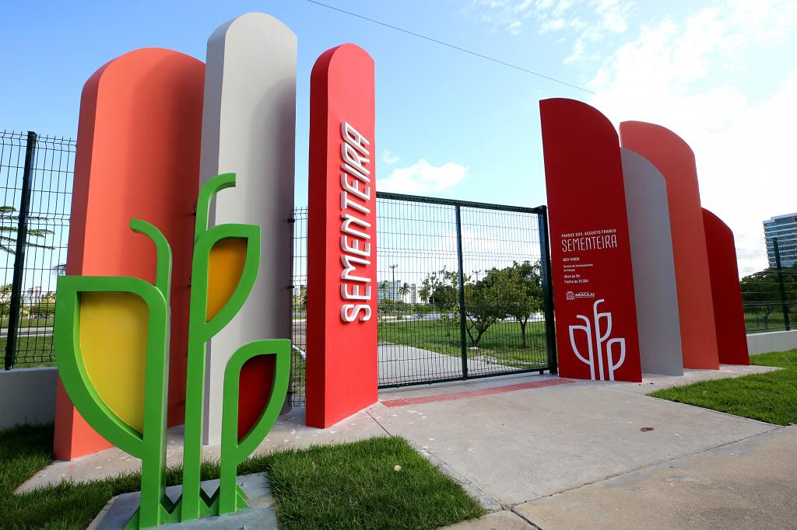

Sementeira

O parque pode ser utilizado pelo aracajuanos e turistas para prática de atividades
esportivas e de
lazer,
pesquisas ambientais,
além de outras
atividades em contato com a natureza. O espaço conta com o parque infantil, campo de futebol,
quadra
poliesportiva, espaço com aparelhos para exercícios físicos, pista para caminhada, quiosques para
piquiniques,
sanitários, lagos e iluminação adequada.
Atratativos do Parque da Sementeira
- Parque Infantil
- Campo de futebol
- Quadra poliesportiva
- Aparelhos para exercícios físicos
- Pista para caminhada
- Quiosque para pequeniques
- Sanitários
- Lagos e áreas verdes
- Iluminação adequada para visitas noturnas